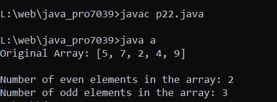

Write a Java program to count the number of even and odd elements in a given array.
Code:-
import java.util.*;
class a {
public static void main(String[] x) {
// Initialize an array of integers
int[] nums = {5, 7, 2, 4, 9};
// Initialize counters for even and odd numbers
int even = 0, odd = 0;
// Display the original array
System.out.println("Original Array: " + Arrays.toString(nums));
// Iterate through the array to count even and odd numbers
for (int i = 0; i < nums.length; i++) {
if (nums[i] % 2 == 0) {
// Increment even numbers
even++;
} else {
// Increment odd numbers
odd++;
}
}
System.out.printf("\nNumber of even elements in the array: %d", even);
System.out.printf("\nNumber of odd elements in the array: %d", odd);
}
}
Output:-

import java.util.*; class a { public static void main(String[] x) { // Initialize an array of integers int[] nums = {5, 7, 2, 4, 9}; // Initialize counters for even and odd numbers int even = 0, odd = 0; // Display the original array System.out.println("Original Array: " + Arrays.toString(nums)); // Iterate through the array to count even and odd numbers for (int i = 0; i < nums.length; i++) { if (nums[i] % 2 == 0) { // Increment even numbers even++; } else { // Increment odd numbers odd++; } } System.out.printf("\nNumber of even elements in the array: %d", even); System.out.printf("\nNumber of odd elements in the array: %d", odd); } }